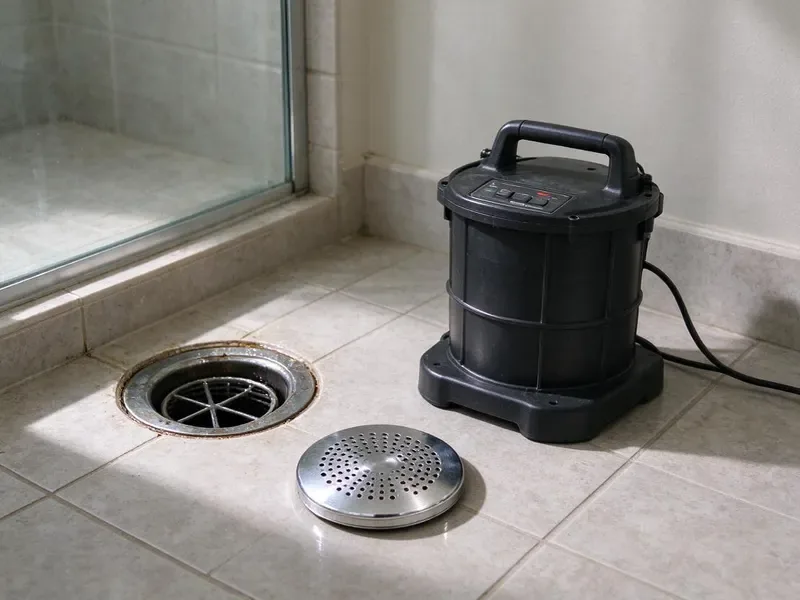

Drain Cleaning in Myrtle Beach, SC
Slow sinks, gurgling tubs and backed-up floor drains get cleared the right way in Myrtle Beach, SC, with cable machines, camera checks and fair pricing.
- Same-Day Drain Appointments
- Prompt, Dependable Service
- Expert Plumbers
- Camera Checks Available
Need Expert Drain Cleaning in Myrtle Beach, SC?
Do not let a clogged drain upset your day, contact KBN Plumbing for immediate help.
Your Local Experts for Drain Cleaning in Myrtle Beach, SC
At KBN Plumbing, we understand the frustration of a slow or stopped drain, especially in older homes with their original plumbing. Our trained plumbers are equipped to handle any blockage, from grease buildup to tree root intrusion, bringing your drains back to full function.
Our expertise includes:
- Cleanout access, including adding a cleanout where missing
- Safe removal of roots, grease, and debris from drains.
- Drum and sectional cable machines sized from sink to main

Additional Drain Services Services in Myrtle Beach, SC
From stubborn kitchen clogs to main sewer backups, our drain services in Myrtle Beach, SC clear the line and keep it clear with camera-verified results.


Customers
Why Choose KBN Plumbing for Drain Cleaning in Myrtle Beach, SC?
Ignoring a slow drain can lead to cracked pipes or sewage backups, especially when soil shifts and puts pressure on lines. Our proactive approach spares you time, money, and stress in the long run.
- Customer Focus, Your satisfaction is our top priority, with clear communication and dependable service.
- Clean Work Area, Drop cloths, shoe covers and a wipe-down of the fixture are included in every drain call.
- Local Expertise, Our team understands the plumbing challenges in Myrtle Beach, including soil movement and mineral buildup inside pipes.
Citywide Coverage
Whether your home sits near the center of Myrtle Beach or out on the edges of town, we schedule drain cleaning with a narrow arrival window. Rental owners and property managers can book access with a tenant directly.
Experienced Team
The technicians at KBN Plumbing are not just experts in drain cleaning, they are dedicated professionals who put quality workmanship and customer satisfaction first. Their extensive knowledge means every job in Myrtle Beach is done right the first time.
Safety-First Approach
We protect your fixtures and finished floors, and we never use harsh acids that can eat older cast iron or damage plastic pipe. Cables are guided through cleanouts or traps, not forced through toilets that can break.
Trusted Certified Myrtle Beach Plumbing Services Professionals
At KBN Plumbing, we take pride in providing certified plumbing services throughout Myrtle Beach, SC. Backed by leading industry credentials, our experienced plumbers combine technical skill with genuine customer care. Whether it is repair, installation, or maintenance, we follow strict safety and quality standards to deliver long-lasting results you can trust.
Call Us Now PHCC Plumbing Contractor Recognition
PHCC Plumbing Contractor Recognition Better Business Bureau (BBB) Accreditation
Better Business Bureau (BBB) Accreditation Angi Certified Pro
Angi Certified Pro ISO 9001 Quality Management Certification
ISO 9001 Quality Management CertificationReliable Drain Cleaning Services in Myrtle Beach, SC
Preventative Drain Maintenance in Myrtle Beach, SC
Regular drain maintenance can prevent most severe clogs and extend the life of your plumbing system. Where mature trees grow near sewer lines, roots can aggressively seek out water in pipes, so routine check-ups are invaluable. KBN Plumbing offers preventative drain cleaning schedules, including enzymatic treatments and periodic inspections, to keep your pipes clear and open, saving you from unexpected emergencies and expensive repairs down the line.

Outdoor & Storm Drain Cleaning in Myrtle Beach
Outdoor drains, including storm drains, can become clogged with leaves, dirt, and debris, especially after heavy rains. A backwater valve, a working sump pump where one exists and clear yard drains go a long way toward safeguarding a home during storm season. These blockages can lead to standing water and foundation issues. We clear these important drains to ensure proper water runoff and shield your property from water damage.
Drain Repair vs. Drain Cleaning in Myrtle Beach
While drain cleaning addresses blockages, sometimes the underlying issue is damage to the pipe itself, such as cracks, corrosion, or misaligned sections. Our technicians in Myrtle Beach can perform video inspections to determine if a simple cleaning will suffice or if a more extensive drain repair or replacement is necessary. We provide straight assessments and clear recommendations, so you understand your options and receive the most appropriate solution for your plumbing system.
Emergency Drain Clog Removal in Myrtle Beach
Drain emergencies do not wait for business hours. A severe backup or overflow can cause serious water damage and health hazards. KBN Plumbing offers emergency drain cleaning in Myrtle Beach to address urgent situations fast and efficiently. Our quick response team is available to clear critical blockages, minimizing disruption and protecting your property from further harm. Feel free to call us when you face an immediate drain crisis.
Kitchen Sink Drain Cleaning in Myrtle Beach
Kitchen sinks are notorious for clogs caused by grease, food particles, and soap buildup. Our technicians in Myrtle Beach use specialized tools, including drain augers and bio-enzymatic cleaners, to break down and remove these stubborn obstructions. We make sure your kitchen sink drains fully and efficiently, preventing future blockages and unpleasant odors. If your garbage disposal is part of the problem, we can address that too, so all components work together for optimal drainage.
Kitchen Drain Cleaning in Myrtle Beach
Kitchen drains frequently clog due to grease, food particles, and soap buildup. We use specialized tools to cut through these common obstructions, restoring full flow. Our methods are safe for all pipe types, including PVC and cast iron, often found in Myrtle Beach homes of every age.
Hydro Jetting for Drains in Myrtle Beach
For the toughest clogs and stubborn buildup, hydro jetting is a very effective solution. This method uses high-pressure water streams to scour the inside of your pipes, removing grease, scale, and even tree roots. It is a non-invasive way to thoroughly clean drains and restore them to near-original condition, a great fit for pipes coated with mineral scale.

Camera Inspection After Drain Cleaning in Myrtle Beach
A camera run after cleaning shows whether the line is really open or if a deeper problem remains. Our self-leveling camera heads record the pipe interior and show the depth and location of any defect. In older homes with cast iron, we often find scale, channeling along the bottom of the pipe or cracked hubs. In clay lines, we look for offset joints and root entry. You get the video and a plain explanation of what it means.
Drain Cleaning Service Near Me in Myrtle Beach, SC
When you search for drain cleaning near me, you want a plumber who shows up on time and clears the clog on the first visit. Our trucks are stocked for sink, tub, laundry and main line work, so there is rarely a second trip. We serve all of Myrtle Beach with local techs who know the housing stock.
For residents and businesses in Myrtle Beach searching for drain cleaning near me, KBN Plumbing is your trusted local expert. Our teams are placed to ensure a fast response time, getting to your property quickly to address any drain emergency.
KBN Plumbing at a Glance
- Licensed and insured plumbers serving Myrtle Beach, SC
- 24/7 emergency service with same-day scheduling
- Upfront, flat-rate pricing before work begins
- 4.8-star rated by 596+ South Carolina customers
Myrtle Beach Map
Myrtle Beach Information
- Population
- 39,697
- Area codes
- 843/434/910
- Service area
- Myrtle Beach and communities within 40 miles
- Nearby
- Florence, Goose Creek, Mount Pleasant, North Charleston
Effective drain cleaning is important for homes in Myrtle Beach, SC, where mineral buildup and aging pipes can cause slow drains, making regular maintenance crucial for preventing major plumbing issues. Most municipal water in South Carolina comes from rivers and reservoirs, so it tends to run fairly soft and leaves less scale than in many other states.
Expert Services
Trust our professionals for reliable KBN Plumbing solutions in Myrtle Beach, SC.
Our Specialized Plumbing Services in Myrtle Beach, SC
At KBN Plumbing, we provide a complete range of plumbing services across Myrtle Beach, SC. From leak detection to full system installations, our team ensures fast, precise, and affordable service for both residential and commercial properties. Explore our core services below:


How Our Drain Cleaning Process Works in Myrtle Beach, SC
Our methodical approach to drain cleaning delivers a thorough job, from diagnosis to final inspection.
Request a Quote
Contact KBN Plumbing by calling (864) 588-3813 to schedule your drain cleaning. Our friendly staff will gather details about your issue and set up an appointment at your convenience.
Diagnosis
Our experienced plumber will arrive on time and conduct a thorough inspection of your drain system, often using a video camera to locate the exact cause and location of the clog.
Clog Removal
Based on the diagnosis, we pick the most effective method, such as snaking or hydro jetting, to clear the obstruction safely and efficiently.
Frequently Asked Questions About Drain Cleaning in Myrtle Beach
Most single fixture drain cleanings in Myrtle Beach run about $125 to $275. Main line cleaning from a cleanout typically costs $175 to $450, and adding a camera inspection usually adds $150 to $350.
No, standard drain cleaning does not typically require a permit in Myrtle Beach, SC. However, if the drain cleaning reveals a need for extensive pipe repair or replacement, a permit may be required for that later plumbing work.
For most homes, an annual or twice-yearly professional drain cleaning is sufficient, especially for kitchen and main lines. If you have frequent clogs or an older plumbing system, more frequent cleanings can be helpful to prevent major issues.
Usually, you do not need a permit for routine drain cleaning or unclogging a drain. Permits are generally required for more extensive plumbing work, such as replacing a sewer line or making major changes to your plumbing system. We will advise you if any permit is needed for your situation.
Water that drains slowly, gurgling sounds, sewer odors and water backing up into a tub or shower are the most common signs. If more than one fixture is affected, the problem is likely in the main line.
In Myrtle Beach, common causes include hair and soap scum in bathroom drains, grease and food particles in kitchen drains, and tree root intrusion into main sewer lines where mature trees grow close to the pipe. Red clay dominates much of the upstate, while the coastal plain of South Carolina has sandy soil and a shallow water table that affects drainage and digging.
A plunger or a small hand auger can handle a simple hair clog near the drain. For deep clogs, main line backups or repeat problems, a pro has the machines and camera to find and fix the real cause.
We usually advise against chemical drain cleaners. While they might offer a temporary fix, they can corrode pipes, especially older ones, and are often ineffective against tough clogs like tree roots or heavy grease buildup. They can also pose health risks.
What People Are Saying About Our Plumbing Experts?

Robert G.
The trenchless sewer replacement saved our front yard. They walked us through the camera inspection footage first so we knew exactly what we were paying for.
Sewer Line Replacement · Florence, SC
Emily R.
I called KBN Plumbing for plumbing repair, and the technician was fast, polite, and thorough. They explained the problem clearly and fixed it the same day. I will definitely hire them again. Highly recommended!
Plumbing Repair · Mount Pleasant, SCJames P.
Our commercial plumbing system had a leak under the sink, and KBN Plumbing handled it professionally. The plumbers arrived quickly and restored everything without disruption to our customers.
Commercial Plumbing · Florence, SC
Daniel K.
A pipe burst at 11 pm and they actually answered. The plumber showed up within the hour, shut everything down, and had us back to normal the next morning. Could not ask for more.
Emergency Plumbing · North Charleston, SC
Laura S.
I scheduled a water heater replacement, and the team made the process smooth and affordable. The new unit works perfectly, and they cleaned up after completing the job.
Water Heater Replacement · Myrtle Beach, SC
Mark T.
When our office needed drain cleaning, KBN Plumbing provided quick, reliable service. The plumber arrived on time and made sure every drain flowed perfectly before leaving. Very satisfied.
Drain Cleaning · Sumter, SC